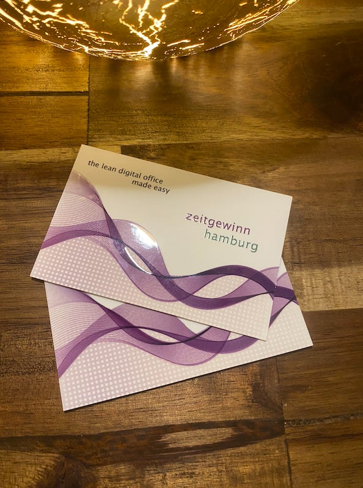
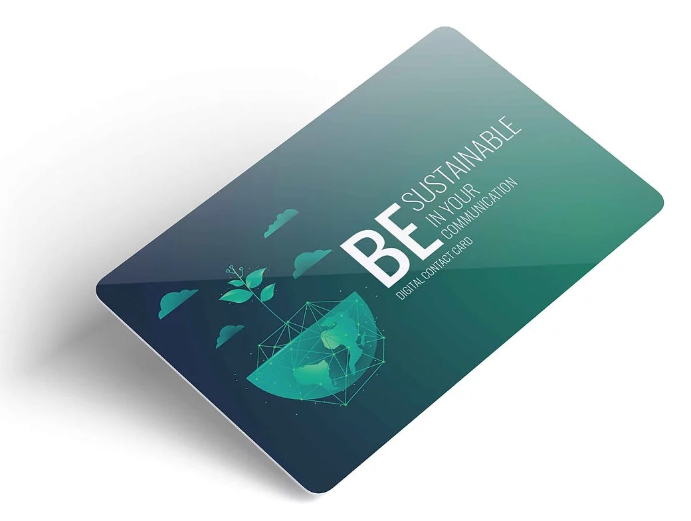
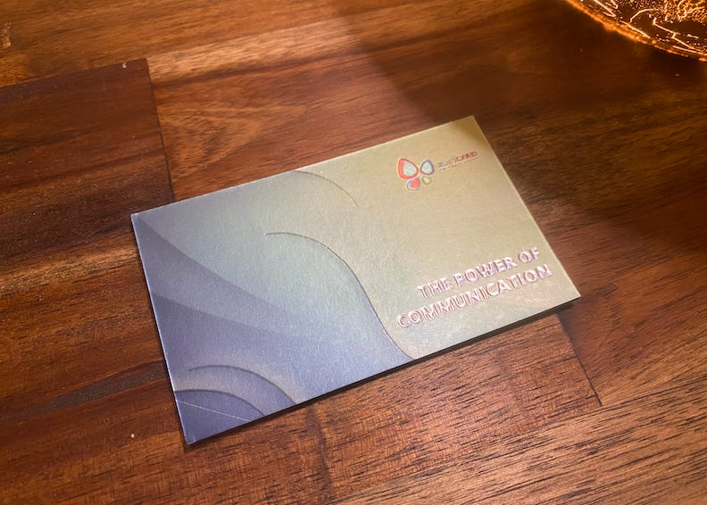
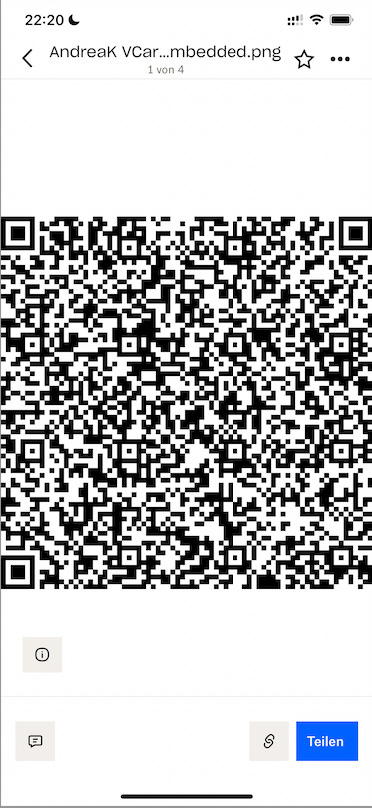
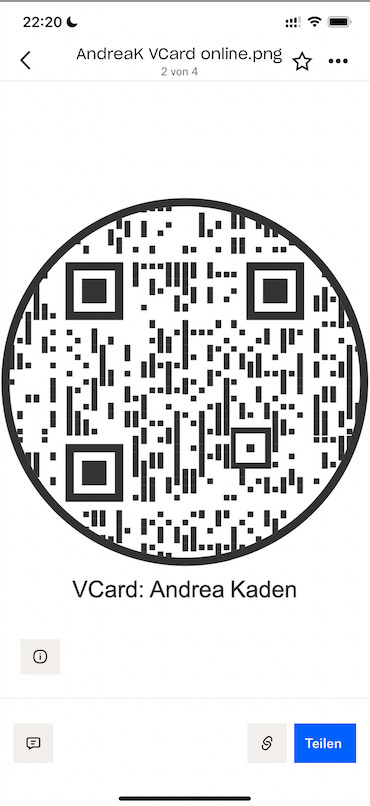
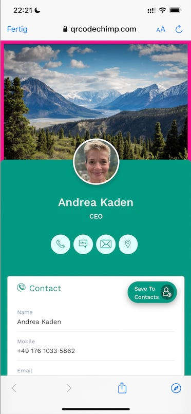
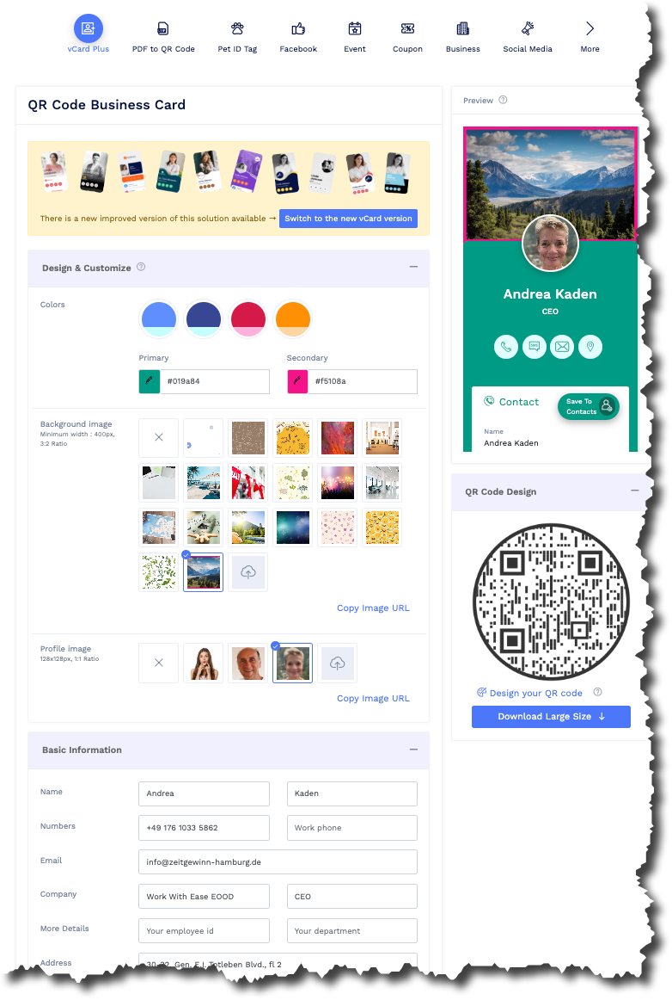

Digitale Visitenkarten
Was braucht die Business-Frau für die Netzwerk-Veranstaltung? Das richtige Outfit und ihre Visitenkarten! Bei einer Reise neulich nach Sofia hatte ich Ersteres eingepackt, Letztere jedoch vergessen. Rausgelegt hatte ich meine Visitenkarten, die mir sehr gut gefallen — doch in einer Aufbruchseile habe ich sie auf der Kommode liegen gelassen. Hätte ich doch wenigstens schon eine digitale Visitenkarte gehabt.

So gerne hätte ich mal wieder einige papieren Karten verteilt. Ich finde sie wertig, sie fassen sich gut an und ich war sicher, auf der SHEleader digital Conference mit ganz analogen Visitenkarten bei ein paar interessanten Gesprächspartnern gut in Erinnerung bleiben zu können.
Doch es hat nicht sein sollen. Leider. Oder zum Glück?
Auf der Konferenz bemerkte ich, dass die Visitenkarten nicht in meinem kleinen Rucksack waren, wo ich sie ganz sicher wähnte. Ich habe mich natürlich sehr über mich selbst geärgert — doch gleichzeitig hat mich diese Überraschung geöffnet für die Alternative. Loslassen war angezeigt.
Semi-digitale Visitenkarten
Wahrscheinlich hätte ich ohne meine Vergesslichkeit den kleinen Stand eines Anbieters von semi-digitalen Visitenkarten gar nicht bemerkt. Zoyo Card war dort vertreten, um zu zeigen, dass für Visitenkarten kein Papier mehr nötig ist; das passte zum Thema “Nachhaltigkeit” der Konferenz.
Wer sich mit Zoyo Card eine digitale Visitenkarte beschafft, der hat nur eine einzige Karte in der Tasche.

Diese Plastikkarte enthält einen NFC-Chip und einen QR-Code. Wenn man einem Gesprächspartner seine Kontaktdaten übergeben will, zückt man die Karte und hält sie an dessen Smartphone. Das bietet daraufhin an, die Kontaktdaten zu speichern. Alternativ kann man über den QR-Code aber auch ein kleines online Profil aufrufen und die Kontaktdaten von dort herunterladen.
Eine Zoyo Card kostet einmalig 20€. Das ist schon bald viel günstiger, als sich immer wieder Visitenkarten drucken zu lassen. Meine waren damals — so schön sie sind — deutlich teurer.
Aber ich musste nicht einmal diese 20€ ausgeben, um eine semi-digitale Visitenkarten von Zoyo Card zu bekommen. Am Stand gab es als Werbegeschenk eine Papierkarte mit derselben Funktionalität. Die ist nicht so hübsch und weniger durabel, aber für den Moment taugt sie sicherlich.

Mit dieser Karte wäre ich aus dem Stand schon in der Lage gewesen, Kontaktdaten auf der Konferenz austauschen zu können. Die Einrichtung eines Profils ist einfach. Das hätte ich auch vor Ort geschafft.
Aber es kam dann anders…
Digitale Visitenkarten
Meinem Partner hatte zwischen von meiner Vergesslichkeit per Telegram-Messenger berichtet und auch Zoyo Card als glückliche Fügung genannt. Dass ich darüber erfreut war, hat er allerdings nicht verstanden. Sein Einwand war, warum denn überhaupt noch eine Karte nötig sei. Der Kontaktdatenaustausch ginge doch viel einfacher; ob ich mich nicht erinnerte, dass er mir das schon demonstriert hatte.
Tatsächlich, da dämmerte es mir wieder…
Eine viel einfachere und echt digitale Lösung ist sogar kostenlos. Dafür reicht es, einen QR-Code auf dem Handy bereit zu haben. Das sieht z.B. so aus:

Die Bild-Datei mit dem QR-Code speichere ich in den Offline-Dateien meiner Dropbox-App auf dem iPhone. Dort ist sie schnell für mich im Zugriff.Probieren Sie es aus: Zücken Sie Ihr Smartphone, öffnen Sie die Kamera-App und richten Sie sie auf diesen QR-Code. Alle Smartphones können heute solche QR-Codes direkt decodieren. Auf einem iPhone wird Ihnen schon in der Kamera-App mein Name gezeigt; wenn Sie auf den tippen, sehen Sie meine Kontaktdaten und können sie in Ihr Adressbuch aufnehmen.
Bei diesem QR-Code stecken meine Kontaktdaten in dem QR-Code; er codiert alle meine Angaben. Das ist technisch möglich und der direkteste Weg der Datenübermittlung — doch leider ist die Herstellung eines solchen QR-Codes etwas knifflig, wenn Sie volle Kontrolle über den Inhalt haben wollen.1
Einfacher ist es, wenn Sie einen kleinen Umweg in Kauf nehmen bei der Kontaktdatenübermittlung. Dann sieht der QR-Code z.B. so aus:

Weniger schwarze Punkte deuten schon an: hier ist weniger drin. Tatsächlich stecken in diesem QR-Code nicht meine Kontaktdaten, sondern nur die Adresse einer Profilseite im Internet: https://linko.page/rjbsvqob2woi?s=url. Wenn Sie die Kamera-App Ihres Smartphones auf diesen QR-Code halten, sehen Sie nicht meinen Namen, sondern einen Teil der Adresse. Tippen Sie die an und Sie werden zur Profilseite geleitet:

Dort erst können Sie die Speicherung der Daten in Ihren Kontakten wünschen.
Dieser kleine Umweg kostet ein wenig mehr Zeit in der Begegnung mit dem Gesprächspartner; dafür sieht der aber ein persönlich gestaltetes Profil und erinnert sich hoffentlich ein bisschen besser an Sie.
Eine solche rein digitale Visitenkarte können Sie z.B. bei dem Service qrcodechimp.com gestalten. Das ist kostenlos und komfortabel:

QRcode Chimp speichert die virtuelle Visitenkarte und generiert den QR-Code mit dem Link zu ihr. Den können Sie herunterladen und die Datei auf Ihrem Smartphone speichern.
Fazit
Ich liebe meine Papier-Visitenkarten. Doch ich will gestehen, dass sie einige Nachteile mit sich bringen:
- Papier-Visitenkarten lassen sich nicht aktualisieren.
- Papier-Visitenkarten sind schnell Abfall — denn wer bewahrt sie heute auf? Ich scanne alle Papier-Visitenkarten, die ich bekomme, sofort und werfe sie dann weg.
- Papier-Visitenkarten verschwenden Holz.
- Und schließlich: Wie ich nur zu deutlich gemerkt habe, kann man Papier-Visitenkarten schlicht vergessen.
Die Zoyo Card scheint diese Probleme zu lösen — doch dafür entstehen andere. Erstens braucht sie Plastik, wo doch Information gar nicht physisch manifestiert werden muss. Zweitens bindet sie an einen Anbieter, der schon morgen nicht mehr am Markt sein muss.
Viel flexibler und auch noch digitaler, d.h. nachhaltiger finde ich deshalb die rein QR-Code basierte Visitenkarte.2 Bei ihr habe ich inhaltlich Gestaltungsfreiheit, kann die Präsentation sehr flexibel anpassen — und bekomme eine Visitenkarte, die unvergesslich ist. Denn dass ich mein iPhone nicht einstecke, das ist sehr, sehr unwahrscheinlich.
Mit einer rein digitalen Visitenkarte bin ich immer bereit, meine Kontaktdaten auszutauschen. Mit ihr riskiere ich keine Frustration mehr beim Netzwerken.
Ein bisschen schade ist es um meine Papier-Visitenkarten… doch ich will meinem früheren Titel “Ms. Paperless” noch mehr gerecht werden. Rein digitale Visitenkarten passen einfach zu mir.
Dieser Artikel erschien zum ersten Mal in meinem Newsletter bei Substack hier im October 2022. Dort finden Sie auch weitere Artikel und können den Newsletter per E-Mail abonnieren.
1 Es gibt zwar Apps, die sie auch dabei unterstützen, z.B. 100AM, doch ich möchte deshalb kein weiteres Adressbuch auf meinem Smartphone führen. Deshalb ziehe ich eine DIY-Lösung für eingebettete Kontaktdaten vor.
2 QRcode Chimp ist nur ein Anbieter für solche Visitenkarten, der mir ganz gut gefallen hat. Sie finden im Internet auch andere; suchen Sie nach den Stichworten “QR-Code vCard”.
Weitere Artikel

Regeln für KI im Office
ChatGPT & Co haben sich schnell in die Herzen und Alltag von vielen Menschen im Berufs- und Privatleben gespielt. Diese neuen Werkzeuge eröffnen uns viele Chancen, nicht nur effizienter zu werden, sondern auch kreativer. Aber …

KI als Copilot für die Assistenz
KI in Form von ChatGPT & Co sind hervorragende neue Werkzeuge im Office-Alltag, um produktiver und ja, auch kreativer, zu werden. Neugier statt Angst ist angezeigt im Umgang mit diesen Werkzeugen, die wie andere Werkzeuge auch …